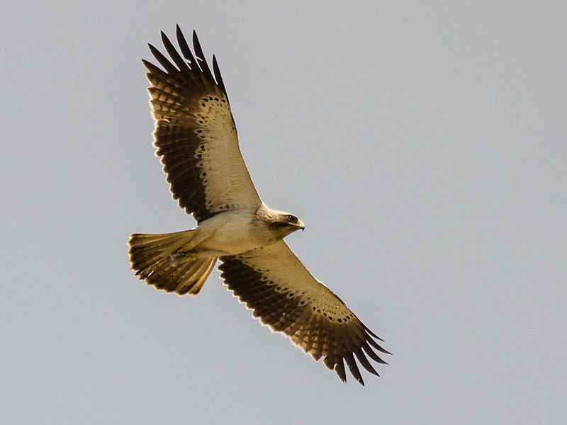

Eagle is the common name for many large birds of prey of the family Accipitridae. Eagles belong to several groups of genera, some of which are closely related. Most of the 60 species of eagle are from Eurasia and Africa.Outside this area, just 14 species can be found—2 in North America, 9 in Central and South America, and 3 in Australia.Eagles are not a natural group but denote essentially any kind of bird of prey large enough to hunt sizeable (about 50 cm long or more overall) vertebrates.
Eagles are large, powerfully-built birds of prey, with heavy heads and beaks. Even the smallest eagles, such as the booted eagle (Aquila pennata), which is comparable in size to a common buzzard (Buteo buteo) or red-tailed hawk (B. jamaicensis), have relatively longer and more evenly broad wings, and more direct, faster flight – despite the reduced size of aerodynamic feathers. Most eagles are larger than any other raptors apart from some vultures. The smallest species of eagle is the South Nicobar serpent eagle (Spilornis klossi), at 450 g (1 lb) and 40 cm (16 in). The largest species are discussed below. Like all birds of prey, eagles have very large hooked beaks for ripping flesh from their prey, strong, muscular legs, and powerful talons.The beak is typically heavier than that of most other birds of prey. Eagles' eyes are extremely powerful. It is estimated that the martial eagle, whose eyes are more than two times larger than the human eye, has a visual acuity up to 8 times that of humans. This acuity enables eagles to spot potential prey from a very long distance.This keen eyesight is primarily attributed to their extremely large pupils which ensure minimal diffraction (scattering) of the incoming light. The female of all known species of eagles is larger than the male. Eagles normally build their nests, called eyries, in tall trees or on high cliffs. Many species lay two eggs, but the older, larger chick frequently kills its younger sibling once it has hatched. The parents take no action to stop the killing. It is said that eagles fly above clouds but this is not true. Eagles fly during storms and glide from the winds pressure. This saves the bird's energy. Due to the size and power of many eagle species, they are ranked at the top of the food chain as apex predators in the avian world. The type of prey varies by genus. The Haliaeetus and Ichthyophaga eagles prefer to capture fish, though the species in the former often capture various animals, especially other water birds, and are powerful kleptoparasites of other birds. The snake and serpent eagles of the genera Circaetus, Terathopius, and Spilornis predominantly prey on the great diversity of snakes found in the tropics of Africa and Asia. The eagles of the genus Aquila are often the top birds of prey in open habitats, taking almost any medium-sized vertebrate they can catch. Where Aquila eagles are absent, other eagles, such as the buteonine black-chested buzzard-eagle of South America, may assume the position of top raptorial predator in open areas. Many other eagles, including the species-rich genus Spizaetus, live predominantly in woodlands and forests. These eagles often target various arboreal or ground-dwelling mammals and birds, which are often unsuspectingly ambushed in such dense, knotty environments. Hunting techniques differ among the species and genera, with some individual eagles having engaged in quite varied techniques based on their environment and prey at any given time. Most eagles grab prey without landing and take flight with it, so the prey can be carried to a perch and torn apart.The bald eagle is noted for having flown with the heaviest load verified to be carried by any flying bird, since one eagle flew with a 6.8 kg (15 lb) mule deer fawn.However, a few eagles may target prey considerably heavier than themselves; such prey is too heavy to fly with, thus it is either eaten at the site of the kill or taken in pieces back to a perch or nest. Golden and crowned eagles have killed ungulates weighing up to 30 kg (66 lb) and a martial eagle even killed a 37 kg (82 lb) duiker, 7–8 times heavier than the preying eagle.Authors on birds David Allen Sibley, Pete Dunne, and Clay Sutton described the behavioral difference between hunting eagles and other birds of prey thus (in this case the bald and golden eagles as compared to other North American raptors):They have at least one singular characteristic. It has been observed that most birds of prey look back over their shoulders before striking prey (or shortly thereafter); predation is after all a two-edged sword. All hawks seem to have this habit, from the smallest kestrel to the largest Ferruginous – but not the Eagles.Among the eagles are some of the largest birds of prey: only the condors and some of the Old World vultures are markedly larger. It is regularly debated which should be considered the largest species of eagle. They could be measured variously in total length, body mass, or wingspan. Different lifestyle needs among various eagles result in variable measurements from species to species. For example, many forest-dwelling eagles, including the very large harpy eagle, have relatively short wingspans, a feature necessary for being able to maneuver in quick, short bursts through densely forested habitats. Eagles in the genus Aquila, found almost exclusively in open country, are noted for their ability to soar, and have relatively long wings for their size.These lists of the top five eagles are based on weight, length, and wingspan, respectively. Unless otherwise noted by reference, the figures listed are the median reported for each measurement in the guide Raptors of the World in which only measurements that could be personally verified by the authors were listed.
The eagles are generally distributed in all types of habitats and nearly all parts of the world. The birds can be found in northern tundra to tropical rainforests and deserts. In North America, bald eagles and golden eagles are very common.The other nine species are endemic to Central and South America. The birds have a highly concentrated population in the Africa and eastern hemisphere. Several islands in the Indian and Pacific Oceans are also rich and have distinct species of eagles.
Eagles are often informally divided into four groups.The snake eagles are placed in the subfamily Circaetinae. The fish eagles, booted eagles, and harpy eagles have traditionally been placed in the subfamily Buteoninae together with the buzzard-hawks (buteonine hawks) and harriers. Some authors may treat these groups as tribes of the Buteoninae; Lerner & Mindell proposed separating the eagle groups into their own subfamilies of Accipitridae.
Sea eagles or fish eagles take fish as a large part of their diets, either fresh or as carrion.Proposed subfamily Haliaeetinae. Genera: Haliaeetus, Ichthyophaga.Some authors include Gypohierax angolensis, the "vulturine fish eagle" (also called the palm-nut vulture) in this group. However, genetic analyses indicate it is related to a grouping of Neophron–Gypaetus–Eutriorchis (Egyptian vulture, bearded vulture (lammergeier), and Madagascar serpent eagle).The fish eagles have a close genetic relationship with Haliastur and Milvus; the whole group is only distantly related to the Buteo group.
 For the species Hieraaetus pennatus (Aquila pennata), see booted eagle. Main article: Booted eaglesBooted eagles or "true eagles" have feathered tarsi (lower legs).Tribe Aquililae or proposed subfamily Aquilinae. Genera: Aquila, Hieraaetus; Spizaetus, Oroaetus, Spizastur; Nisaetus; Ictinaetus, Lophoaetus; Polemaetus; and Stephanoaetus.See comments under eagle species for changes to the composition of these genera.
The modern English term for the bird is derived from Latin: aquila by way of French: aigle. The origin of aquila is unknown, but it is believed to possibly derive from aquilus (meaning dark-colored, swarthy, or blackish) as a reference to the plumage of eagles.Old English used the term earn, related to Scandinavia's ørn/örn. It is similar to other Indo-European terms for "bird" or "eagle", including Greek: ὄρνις (ornís), Russian: орёл (orël), and Welsh: eryr.In the southern part of Finland, near the Gulf of Finland, is the town of Kotka, which literally means "eagle", while the town of L'Aquila in the central part of Italy literally means "the eagle".In Britain before 1678, eagle referred specifically to the golden eagle, with the other native species, the white-tailed eagle, being known as erne. The modern name "golden eagle" for aquila chrysaetos was introduced by the naturalist John Ray.The village of Eagle in Lincolnshire, England, has nothing to do with the bird; its name is derived from the Old English words for "oak" and "wood" (compare Oakley).